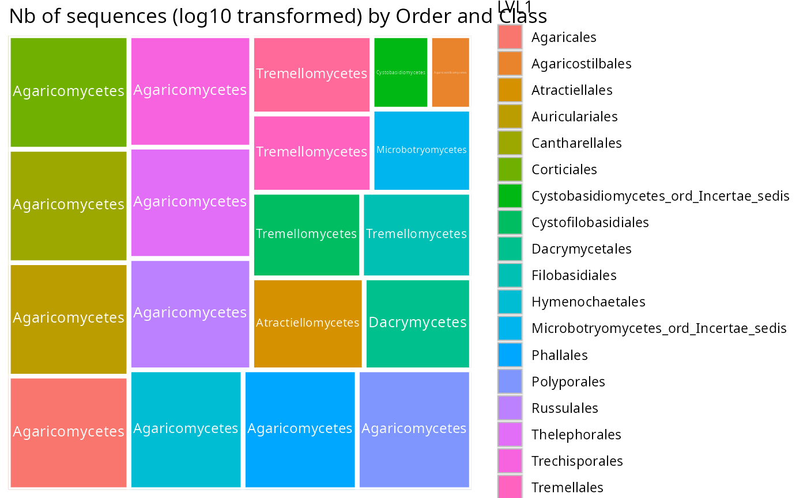
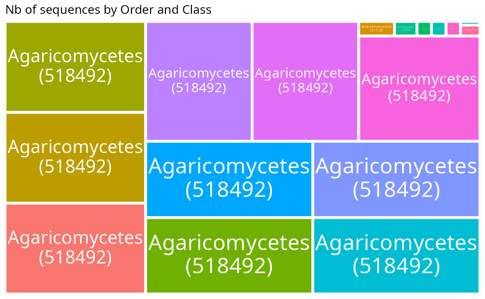

Note that lvl2need to be nested in lvl1
Usage
treemap_pq(
physeq,
lvl1,
lvl2,
nb_seq = TRUE,
log10trans = TRUE,
plot_legend = FALSE,
show_count = FALSE,
facet_by = NULL,
growing_text = TRUE,
text_size = 15,
show_na = TRUE,
na_label = "NA",
min_text_size = 0,
...
)Arguments
- physeq
(required) a
phyloseq-classobject obtained using thephyloseqpackage.- lvl1
(required) Name of the first (higher) taxonomic rank of interest
- lvl2
(required) Name of the second (lower) taxonomic rank of interest
- nb_seq
(logical; default TRUE) If set to FALSE, only the number of ASV is count. Concretely, physeq otu_table is transformed in a binary otu_table (each value different from zero is set to one)
- log10trans
(logical, default TRUE) If TRUE, the number of sequences (or ASV if nb_seq = FALSE) is log10(x + 1) transformed. The +1 ensures that taxa with a count of 1 still have a visible tile area.
- plot_legend
(logical, default FALSE) If TRUE, plot che legend of color for lvl 1
- show_count
(logical, default FALSE) If TRUE, appends the raw count in parentheses after each
lvl2label, e.g."Agaricus (42)".- facet_by
(character, default NULL) Name of a column in
sample_data(physeq)to facet by. Each level produces its own treemap panel viaggplot2::facet_wrap().- growing_text
(logical, default TRUE) If FALSE, all tile labels are drawn at the same font size (disables per-tile text growing), which corresponds to the smallest size that would otherwise be computed.
- text_size
(numeric, default 15) Base font size for tile labels. Mostly useful when
growing_text = FALSE, as it sets the size of all labels.- show_na
(logical, default TRUE) If TRUE, taxa with NA values for
lvl1orlvl2are kept and displayed as a grey "NA" area. If FALSE, they are removed (previous default behavior).- na_label
(character, default "NA") Label used to replace NA values in
lvl1andlvl2whenshow_na = TRUE.- min_text_size
(numeric, default 0) Minimum font size in points for tile labels. Labels that would be smaller than this are hidden. Set to 0 to always show all labels.
- ...
Additional arguments passed on to
treemapify::geom_treemap()function.
Examples
data(data_fungi_sp_known)
if (requireNamespace("treemapify")) {
treemap_pq(
clean_pq(subset_taxa(
data_fungi_sp_known,
Phylum == "Basidiomycota"
)),
"Order", "Class",
plot_legend = TRUE
)
}
#> Loading required namespace: treemapify
#> Cleaning suppress 0 taxa and 5 samples.

# \donttest{
if (requireNamespace("treemapify")) {
treemap_pq(
clean_pq(subset_taxa(
data_fungi_sp_known,
Phylum == "Basidiomycota"
)),
"Order", "Class",
log10trans = FALSE
)
treemap_pq(
clean_pq(subset_taxa(
data_fungi_sp_known,
Phylum == "Basidiomycota"
)),
"Order", "Class",
nb_seq = FALSE, log10trans = FALSE
)
treemap_pq(
clean_pq(subset_taxa(
data_fungi_sp_known,
Phylum == "Basidiomycota"
)),
"Order", "Class",
show_count = TRUE, log10trans = FALSE
)
}
#> Cleaning suppress 0 taxa and 5 samples.
#> Cleaning suppress 0 taxa and 5 samples.
#> Cleaning suppress 0 taxa and 5 samples.

# }